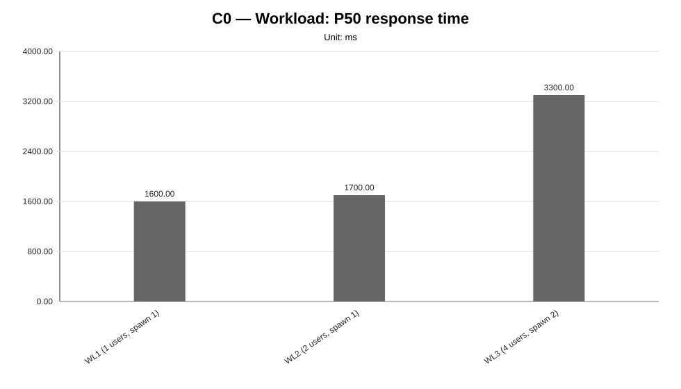
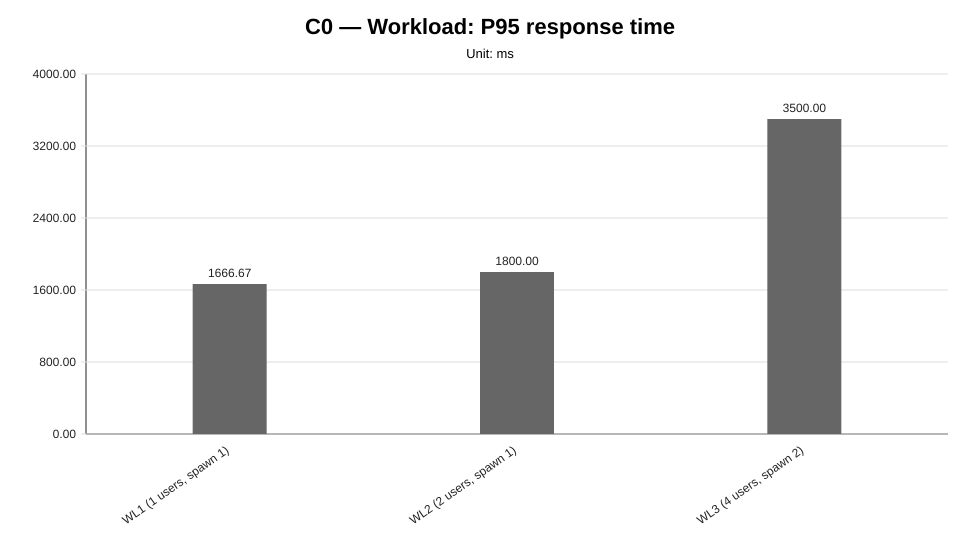
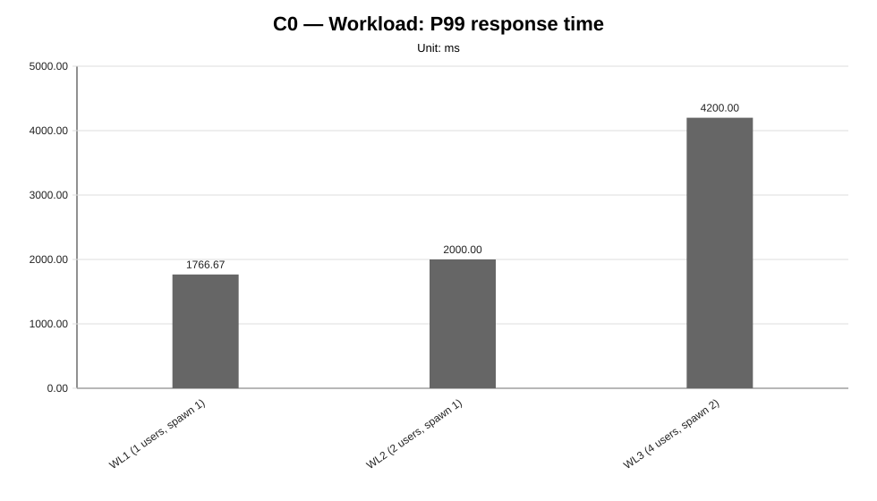
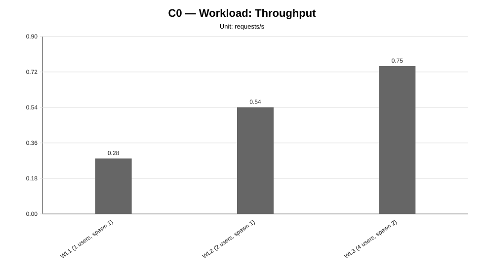
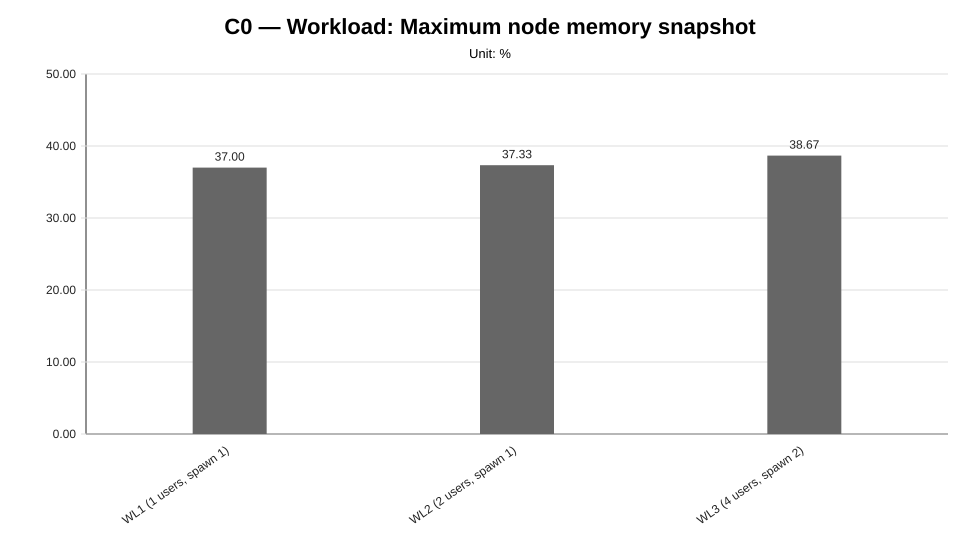
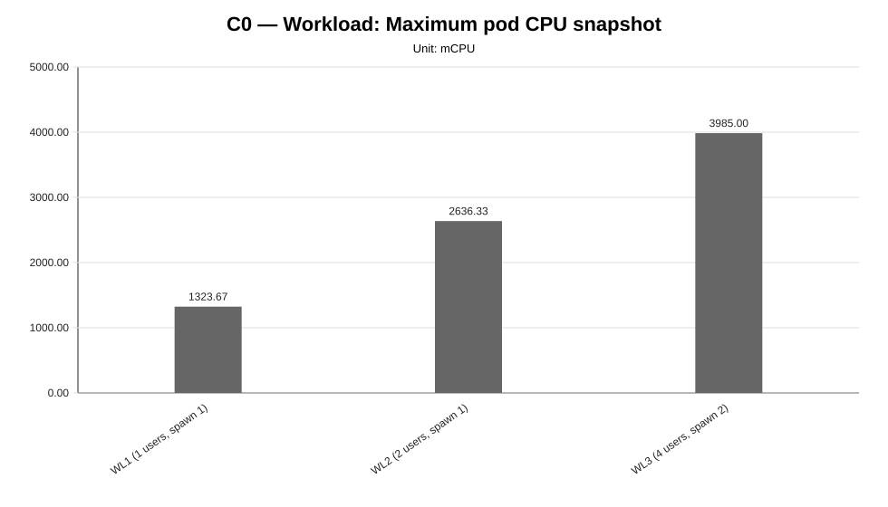
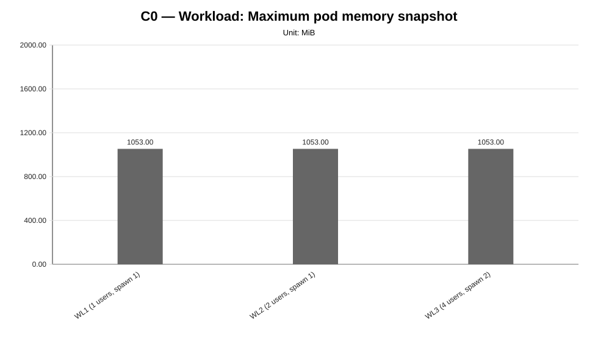

Cycle ID: C0
Sweep: workload
Reporting Profile: RP_C0_HISTORICAL_FIXED_CLUSTER
Reporting ID: REP_C0_20260619T174611Z
Generated at UTC: 2026-06-19T17:46:12Z
This sweep-specific report isolates Workload so that the varied dimension, fixed dimensions, measured values, unsupported evidence and diagnosis-based reading can be inspected without navigating the full consolidated report.
Execution status: fully_measured
Execution note: All configured scenarios in this sweep have measured benchmark samples.
Varied dimension: synthetic client-side workload pattern
Fixed dimensions: baseline model, baseline worker count, baseline placement, baseline protocol.
Reference scenario within the sweep: WL2
| Scenario count | Measured | Unsupported | Missing |
|---|---|---|---|
| 3 | 3 | 0 | 0 |
This table is derived from resolved scenario metadata. A parameter is marked as controlled only when it has the same effective value across all scenarios in the sweep.
| Parameter | Resolved value | Interpretation |
|---|---|---|
| Model | llama-3.2-1b-instruct:q4_k_m | controlled |
| Worker count | 2 | controlled |
| Placement | colocated_sc_app_02 | controlled |
| Workload | varies across scenarios (3 values) | varied or scenario-specific |
| Topology | infra/k8s/compositions/topology/colocated-sc-app-02-w2 | controlled |
| Server manifest | infra/k8s/compositions/server/models/m1 | controlled |
| Prompt | Reply with only READY. | controlled |
| Temperature | 0.1 | controlled |
| Request timeout (s) | 120 | controlled |
| Scenario | Status | Varied value (synthetic client-side workload pattern) | Model | Worker count | Placement | Workload | Timeout (s) |
|---|---|---|---|---|---|---|---|
WL1 | measured | users=1, spawnRate=1, runTime=2m | llama-3.2-1b-instruct:q4_k_m | 2 | colocated_sc_app_02 | users=1, spawnRate=1, runTime=2m | 120 |
WL2 | measured | users=2, spawnRate=1, runTime=2m | llama-3.2-1b-instruct:q4_k_m | 2 | colocated_sc_app_02 | users=2, spawnRate=1, runTime=2m | 120 |
WL3 | measured | users=4, spawnRate=2, runTime=2m | llama-3.2-1b-instruct:q4_k_m | 2 | colocated_sc_app_02 | users=4, spawnRate=2, runTime=2m | 120 |
This compact table reports the core indicators used to read the sweep at a glance. Detailed percentiles, deltas and resource snapshots are reported in the following extended table.
| Scenario | Description | Status | Sample count | Mean response time (ms) | P95 response time (ms) | Throughput (requests/s) | Unsupported evidence |
|---|---|---|---|---|---|---|---|
WL1 | WL1 (1 users, spawn 1) | measured | 3 | 1589.17 | 1666.67 | 0.2812 | |
WL2 | WL2 (2 users, spawn 1) | measured | 3 | 1701.29 | 1800.00 | 0.5408 | |
WL3 | WL3 (4 users, spawn 2) | measured | 3 | 3311.63 | 3500.00 | 0.7499 |
This secondary table keeps the additional metrics aligned with the technical diagnosis while avoiding an excessively wide primary summary table.
| Scenario | P50 response time (ms) | P99 response time (ms) | Mean response time delta (%) | P95 response time delta (%) | Throughput delta (%) | Max node CPU snapshot (%) | Max node memory snapshot (%) | Max pod CPU snapshot (mCPU) | Max pod memory snapshot (MiB) |
|---|---|---|---|---|---|---|---|---|---|
WL1 | 1600.00 | 1766.67 | -6.59 | -7.41 | -48.00 | 17.33 | 37.00 | 1323.67 | 1053.00 |
WL2 | 1700.00 | 2000.00 | 0.00 | 0.00 | 0.00 | 36.67 | 37.33 | 2636.33 | 1053.00 |
WL3 | 3300.00 | 4200.00 | 94.65 | 94.44 | 38.66 | 54.67 | 38.67 | 3985.00 | 1053.00 |
strong_signal, confidence: medium).medium).






not_executed sweep means that neither measurement CSV files nor unsupported-scenario evidence were found for any configured scenario in that family.